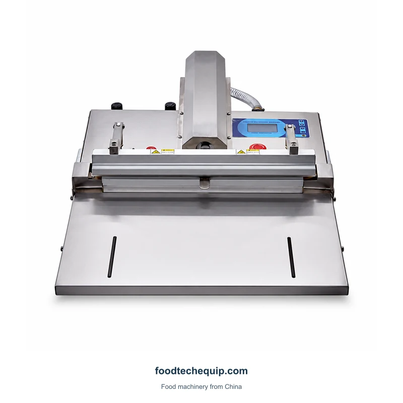
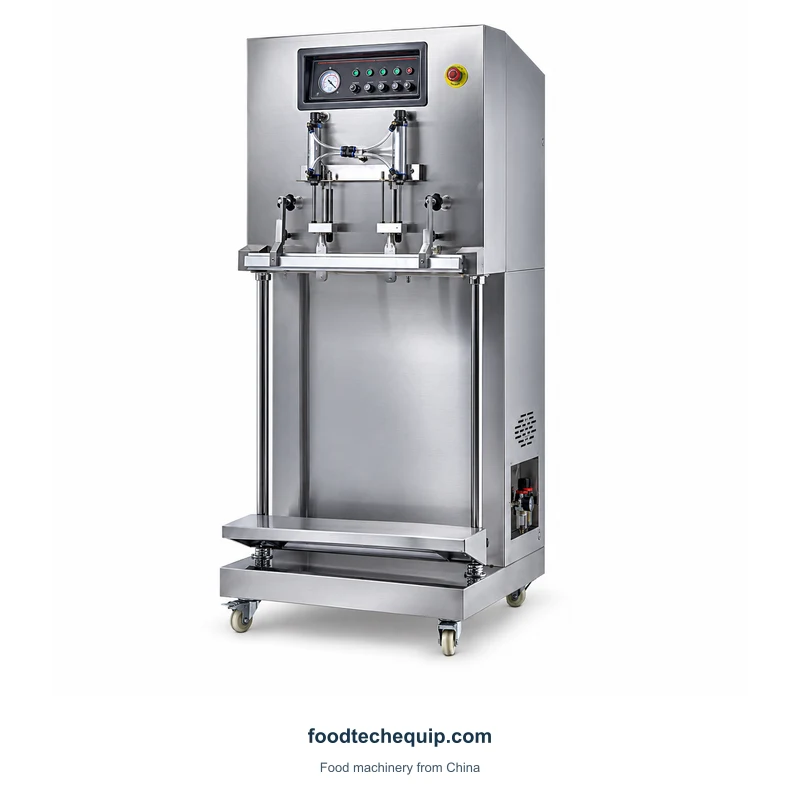

การบรรจุสุญญากาศ
เครื่องบรรจุสุญญากาศแบบดูดจากภายนอก แบบแนวตั้งและแบบยก
เครื่องบรรจุสุญญากาศแบบดูดจากภายนอก มีชุดแนวตั้งและชุดยกให้เปรียบเทียบ
ดูอุปกรณ์
เลือกภาพเพื่อดูขนาดใหญ่
เครื่องบรรจุสุญญากาศแบบดูดจากภายนอกชนิดตั้งโต๊ะ พร้อมชุดซีลด้านหน้าและพื้นที่รองรับ
ช่วยเลือกเครื่องจักร · แนะนำการติดตั้ง · สนับสนุนทางไกล
สํารวจข้อมูลผลิตภัณฑ์ ↓อธิบายม้านั่งแพ็คเต็มและการสนับสนุนที่จําเป็นในด้านหน้าของตําแหน่งการปิดผนึก ตรวจสอบการเข้าถึงสําหรับการโหลดก่อนที่จะเลือกการจัดเรียงบนโต๊ะ
วิธีเลือกเครื่องบรรจุสุญญากาศ ↗| รายการสเปก | ค่า | หน่วย |
|---|---|---|
| วัสดุปลอกเครื่อง | สเตนเลส 304 | — |
ตรวจว่าถุงหลังบรรจุพอดีกับพื้นที่ทำงานและมีที่รองรับขณะป้อน ระบุขนาดโดยรวม รูปปากถุง และแนวซีลที่ต้องการ หากใช้เครื่องปิดถุงแยก ให้ระบุเป็นอีกขั้นของกระบวนการ
เครื่องบรรจุสุญญากาศแบบดูดจากภายนอก มีชุดแนวตั้งและชุดยกให้เปรียบเทียบ
ดูอุปกรณ์
เครื่องบรรจุภัณฑ์สูญญากาศภายนอกตรง เปรียบเทียบ QDZ-600F และ VS600 การจัดอันดับไฟฟ้าก่อนที่จะขอใบเสนอราคา
ดูอุปกรณ์
เครื่องบรรจุสูญญากาศภายนอกแบบตรงพร้อมการสนับสนุนที่ปรับได้สําหรับถุงพลาสติก น้ําหนักเครื่องที่ระบุไว้คือ 100 kg
ดูอุปกรณ์